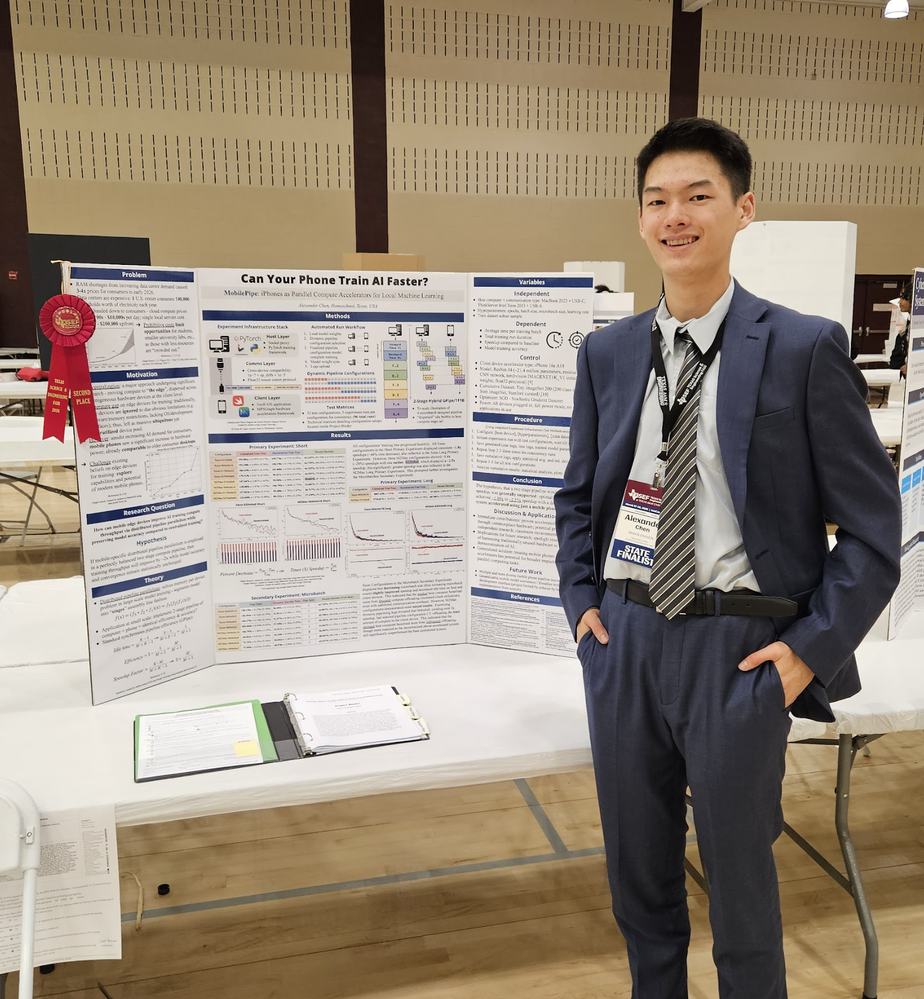
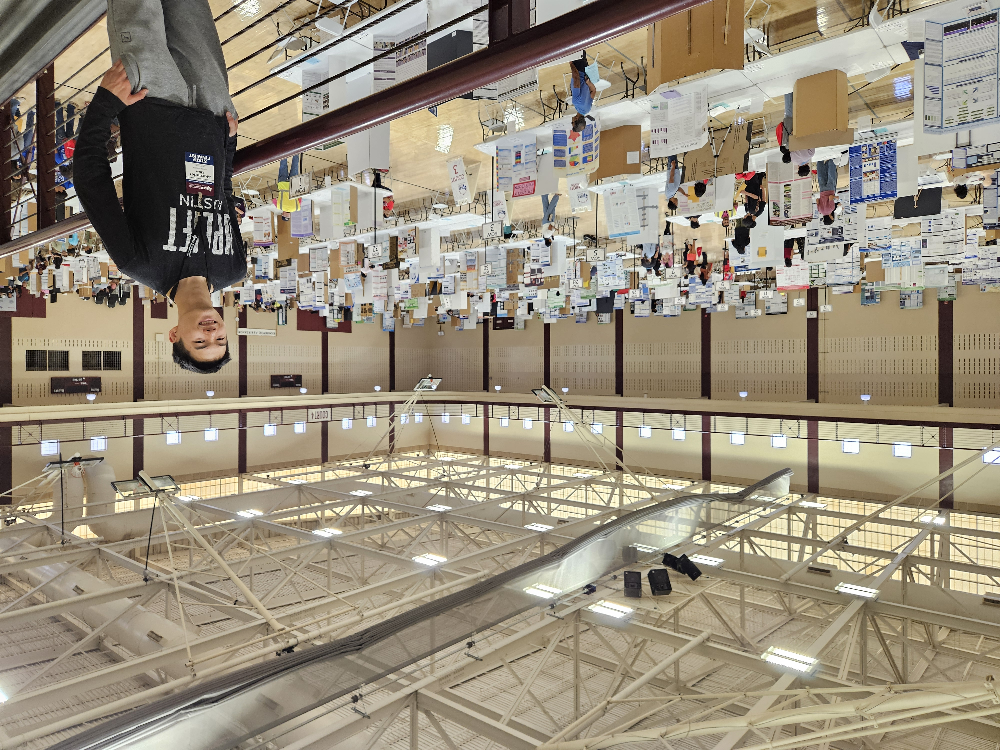
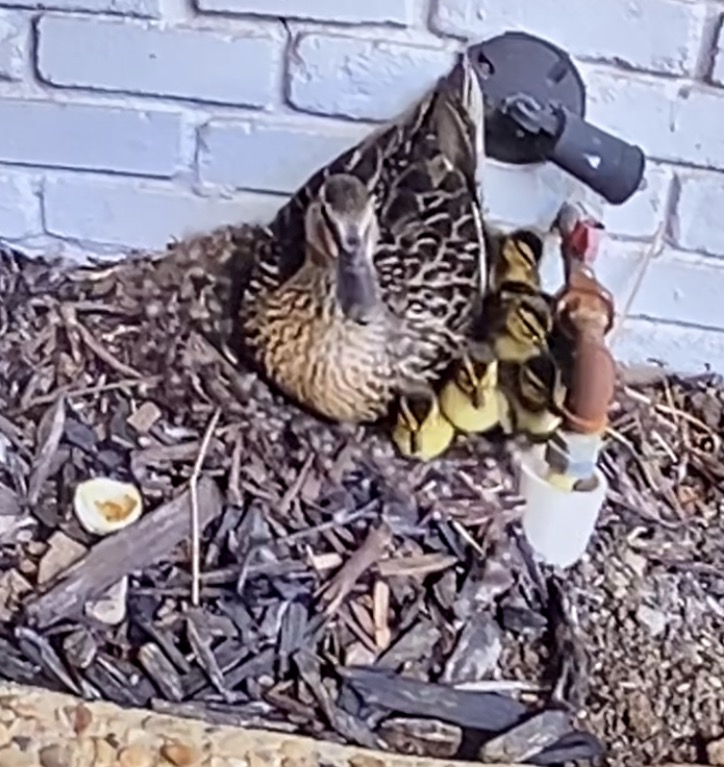
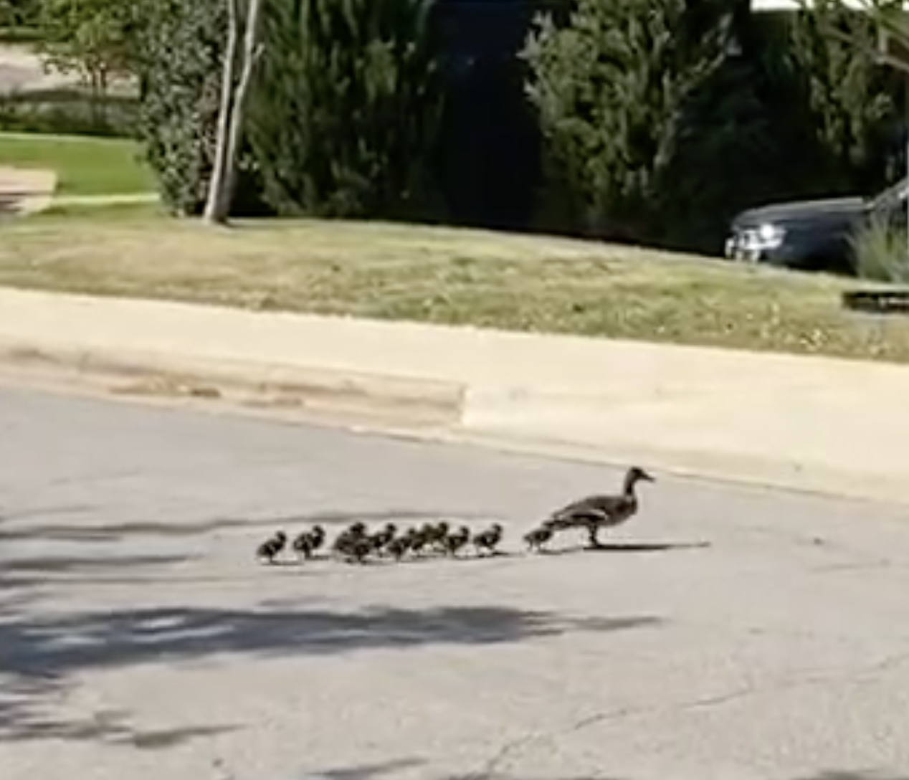
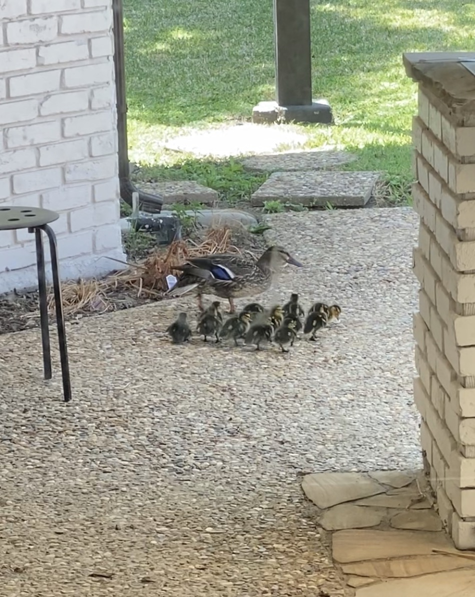
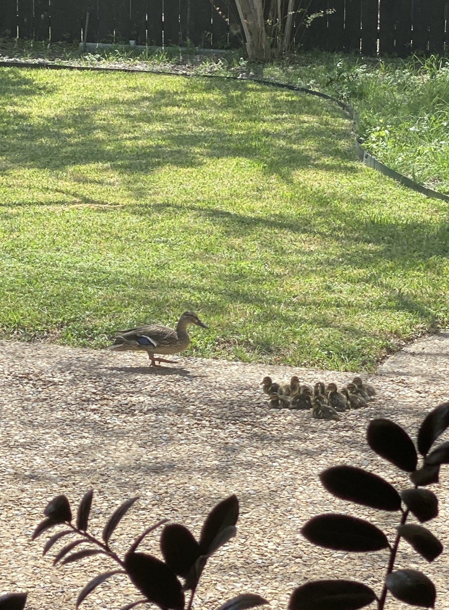
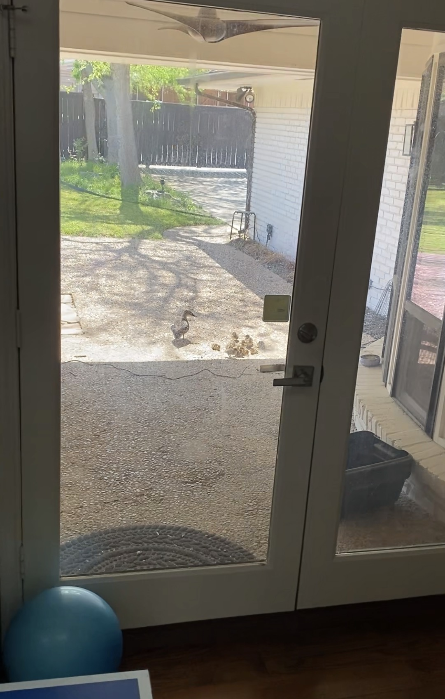

This weekend I competed at the TXSEF state fair and placed 2nd in the System Software / Software Design category.
Unfortunately, my spot in the Blue Ribbon round to compete for an ISEF ticket was snatched away by the Houston competitor who had already qualified for ISEF (May Espinola, prev. ISEF 2025 TECA 2nd place... :|). ISEF-affiliated fairs should really fix their system to prevent "slot gate-keeping", a point brought up by a lot of competitors I talked with. Oh welp. At least I got a full-scholarship invitation to the Governor's research champion's academy this summer; I'll see how my schedule fits for that. Also, congrats to Ellie Tang (who I competed with in the finals rounds at the Dallas fair; she's in the TECA category) for obtaining an ISEF spot - go Dallas representation!


On a brighter note, the duck eggs in our backyard hatched last night! :D Some time last month a duck came and built a nest right next to the wall of our house. Mommy duck was leading the ducklings around our backyard this morning, then later this afternoon they crossed the road to the lake across from our house.





That's all for now - till next time!